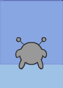
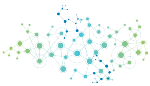

Michael Sheroubi
Summary
Language and AI enthusiast with a wide breadth of knowledge. Experience working with SQL & NoSQL databases, building ETL pipelines, and writing automation scripts in Python.
Lifelong learner.
Run-AI 
Using OpenCV to train a Convolutional Neural Network
Using OpenCV's edge detection as the input, the CNN (Convolutional Neural Network) was fed hours of training data. This was my first project working with neural networks. While I did write my own simple neural network, I resorted to using AlexNet since it got better results. I learned how to use OpenCV to process live image data which was pretty exciting.
Honour's Thesis 
September 2019 - April 2020Benchmarking performance for Neo4j in a Social Media Application
Comparing the performance of Neo4j and SQL Server inside a social media application. The project involved data modelling, application architecture decisions, testing, and importing bulk data. After the database setup, the focus shifted towards designing queries to get information from the social network.
Roubi Analytics
Data Analytics and Consulting Firm
An consulting firm specializing in data-centric solutions. Focus on database design, implementation, data migration.
Nova-Graph 
Graph Theory and NLP Research
A new approach towards building the "memory" of a virtual agent, NOVA. The aim is to create a knowledge-graph in high-dimensional space. Nodes would form relationships based on their position in this space. Their position in this space will change based on input from training texts. In short, each word would be defined by its neighbours inside this graph. The challenge is how to extract meaningful relationships and nodes from a piece of text (Big NLP Problem 1) and how to display query results in a meaningful output (NLP Problem 2).
Analog Clock Reader
Read time from an Analog Clock
The main purpose of this project is to develop a model for analog clock identification and to implement a program that would be able to read a given image and return the time displayed after its analysis. This is achieved broadly in three steps: find the clock, identify the centre and detect and highlight hands using Canny edge detection with Hough transform, and calculate the angles between the hands to a given time in hours, minutes and seconds respectively. One of the related works similar to this project is “An analog gauge reader”.
Contact: Email: msheroubi@gmail.com
Education:
University of British Columbia BSc. Honours Computer Science Minor in Mathematics Specialization in Data Science GPA 3.90/4.33Certifications:
CompTIA Security+ Google Data Analytics Certified Neo4j Professional Areas of Expertise: ***** Automation & Scripting *** Database Design *** Data Migration *** Data Analysis ** Image Processing & Computer Vision ** Machine Learning & Neural Networks Areas of Interest: ***** Natural Language Processing ***** Artificial Intelligence*** Graph Theory
Tool Box: Languages: ***** Python **** SQL ** R ** Java
Libraries / Frameworks: **** Pandas ** OpenCV ** TensorFlow ** Django
Other: **** Excel *** Github
*** VS Code
Capstone Peer Evaluations